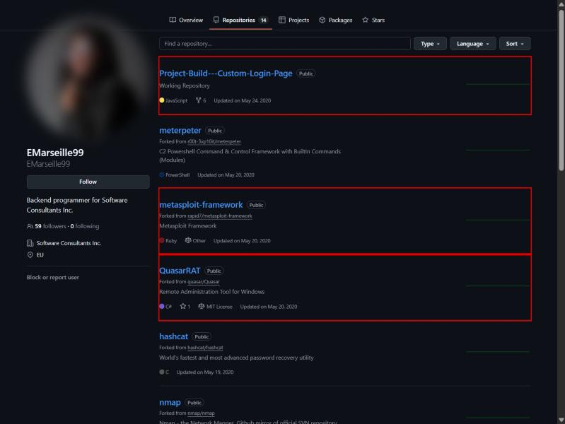
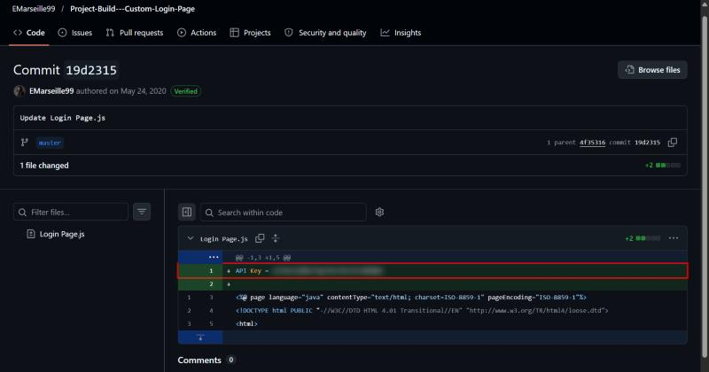
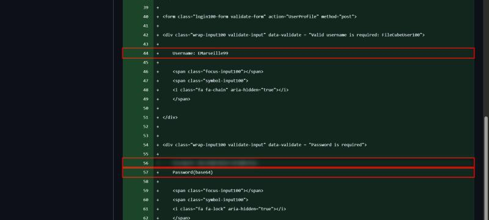
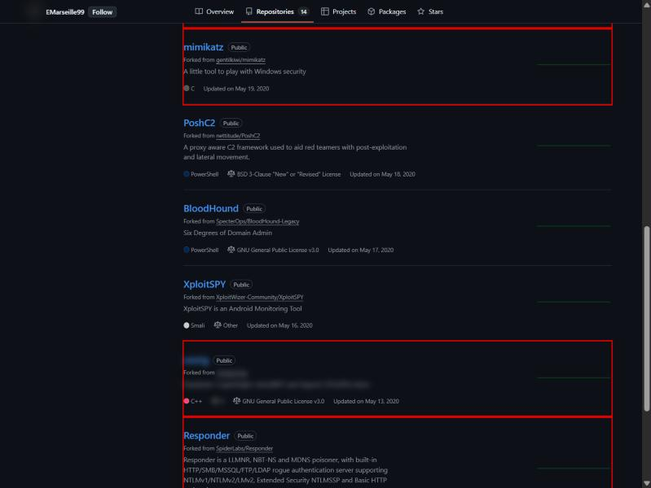
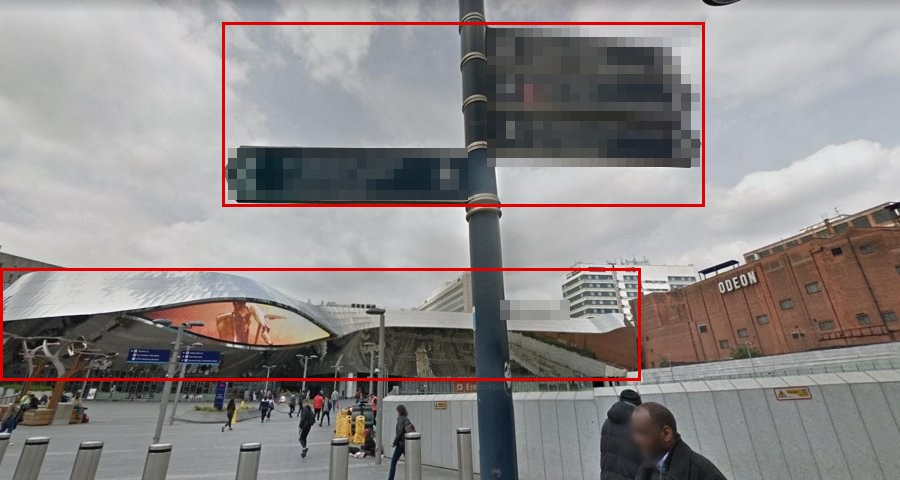
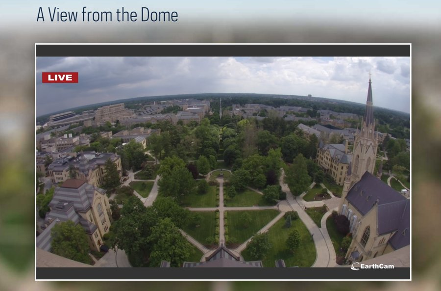

Lespion
- Lab: Lespion trên CyberDefenders. Nhóm Threat Intel, độ khó Easy, đã retired.
- Dữ liệu: ba file do lab cung cấp.
Github.txt: một dòng duy nhất, là link tới tài khoản GitHubEMarseille99.office.jpg: ảnh tòa nhà văn phòng công ty.WebCam.png: ảnh chụp từ một camera phát trực tiếp.- Công cụ: trình duyệt, GitHub API (
api.github.com) để liệt kê commit, công cụ giải mã Base64. Danh sách của lab còn có Google Maps, Google Image search (tìm ảnh ngược) và Sherlock (dò một username trên nhiều trang web). - Quy ước:
- Ảnh là ảnh chụp trang GitHub thật của tài khoản do lab dựng và ảnh gốc của lab.
- Khung đỏ đánh dấu chỗ cần chú ý. Vùng làm mờ là đáp án của câu hỏi (key, mật khẩu, tên repo).
- Ảnh đại diện của tài khoản được làm mờ.
Tóm tắt kết quả
- Tài khoản GitHub tự giới thiệu là lập trình viên backend của Software Consultants Inc. Tài khoản có 14 repo, 13 repo là bản fork.
- Repo
Project-Build---Custom-Login-Pagecó 4 commit. Hai commit lộ secret: - commit
cf8fed0ghi username kèm một mật khẩu chỉ mã hóa Base64; - commit
19d2315thêm một API key thẳng vào fileLogin Page.js. - 13 repo fork gồm framework C2, công cụ dump credential, RAT, công cụ dò mạng và một công cụ đào tiền ảo.
- Hai ảnh
office.jpgvàWebCam.pngchứa các chi tiết dùng để xác định địa điểm: biển chỉ đường, logo và tiêu đề của camera công khai (Bước 6, 7). - Secret bị lộ công khai trên GitHub có bằng chứng trực tiếp (Bước 2). Lab không có log nội bộ nào, nên chưa đủ dữ liệu để xác định nhân viên này đã tấn công hạ tầng công ty hay chưa.
Bước 1: xem hồ sơ và danh sách repo
- Mục tiêu: biết người này là ai và đang giữ những gì trên GitHub.
- Cách làm: mở link trong
Github.txt, chọn tab Repositories.

- Nhận định:
- Repo tự viết duy nhất làm trang đăng nhập cho hệ thống của công ty. Đây là chỗ cần xem lịch sử commit (Bước 2).
- Các repo còn lại đều là fork, phần lớn là công cụ tấn công (Bước 3).
Bước 2: secret trong lịch sử commit
- Mục tiêu: tìm thông tin nhạy cảm từng bị đẩy lên GitHub.
- Cách làm: liệt kê commit của repo rồi mở từng commit để xem diff. Code đã sửa ở bản hiện tại vẫn còn nguyên trong lịch sử.
curl -s "https://api.github.com/repos/EMarseille99/Project-Build---Custom-Login-Page/commits"
- Kết quả có 4 commit:
cf8fed0Create Login Page (23/05/2020 23:16 UTC);4f35316Rename Login Page to Login Page.js;19d2315Update Login Page.js (23/05/2020 23:20 UTC);29f1176Create fsociety.js (24/05/2020).


- Nhận định:
- API key nằm thẳng trong file code công khai. Bất kỳ ai xem được repo cũng lấy được key.
- Mật khẩu chỉ được mã hóa Base64. Base64 là cách mã hóa để truyền dữ liệu, giải ngược được ngay, không có tác dụng bảo mật.
- Hướng giải: API key là giá trị ở dòng 1 của commit
19d2315. Mật khẩu là kết quả giải mã chuỗi ở dòng 56 của commitcf8fed0.
Bước 3: công cụ trái phép trong các repo fork
- Mục tiêu: kiểm tra tài khoản giữ những phần mềm gì.
- Cách làm: xem dòng "Forked from" và phần mô tả của từng repo.

- Nhận định:
- Đủ 13 bản fork gồm: meterpeter, metasploit-framework, QuasarRAT, hashcat, nmap, Empire, mimikatz, PoshC2, BloodHound, XploitSPY, công cụ đào tiền ảo, Responder, Mirai-Source-Code.
- Bộ công cụ này đủ cho cả một chuỗi tấn công: dò mạng, lấy credential, điều khiển từ xa.
- Fork một repo chỉ cho thấy người này quan tâm hoặc lưu lại công cụ. Muốn biết công cụ đã chạy trên máy công ty hay chưa, cần log tiến trình (EDR, Sysmon) và log mạng (kết nối tới mining pool hoặc máy chủ C2) từ máy của nhân viên.
- Hướng giải: tên công cụ đào tiền ảo là tên repo đã làm mờ.
Bước 4: liên kết tài khoản trên nền tảng khác
- Mục tiêu: tìm các tài khoản khác của cùng một người.
- Cách làm: tìm cùng username
EMarseille99trên các nền tảng phổ biến. Sherlock làm việc này tự động:sherlock EMarseille99. - Nhận định:
- Chưa có chứng cứ trong bài: trang của nền tảng game bị chặn trong trình duyệt dùng để viết bài, còn Instagram yêu cầu đăng nhập, nên chưa chụp và chưa đối chiếu được nội dung các tài khoản này.
- Hướng giải: chạy Sherlock hoặc tìm thủ công theo username. Đáp án là tên nền tảng game và link Instagram trả về cho đúng username này.
Bước 5: thông tin cá nhân qua Instagram
- Mục tiêu: xác định nơi người này đi du lịch và nơi gia đình sống.
- Cách làm: đăng nhập Instagram, mở tài khoản tìm được ở Bước 4, đọc ảnh và chú thích. Với ảnh phong cảnh, tìm ảnh ngược (Google Image search) để lấy tên địa danh.
- Nhận định:
- Chưa có chứng cứ trong bài: chưa truy cập được nội dung tài khoản Instagram (Bước 4).
- Hướng giải: tên quốc gia suy ra từ địa danh trong ảnh du lịch. Thành phố của gia đình đọc trong các bài đăng còn lại của cùng tài khoản.
Bước 6: vị trí văn phòng công ty
- Mục tiêu: xác định thành phố đặt công ty từ
office.jpg. - Cách làm: tìm ảnh ngược bằng Google Image search, sau đó đối chiếu kiến trúc tòa nhà và đường phố trên Google Maps (Street View).

- Nhận định:
- Biển chỉ đường ghi tên các địa điểm gần đó. Chỉ riêng các tên này đã đủ để khoanh vùng thành phố.
- Tòa nhà mặt cong phản chiếu và rạp chiếu phim bên phải là hai điểm mốc dễ đối chiếu. Bài chưa có ảnh Street View đối chiếu, nên vị trí cuối cùng cần được xác nhận trên Google Maps.
- Hướng giải: tìm tên trên biển chỉ đường, rồi xác nhận bằng Street View.
Bước 7: vị trí camera
- Mục tiêu: xác định tiểu bang đặt camera trong
WebCam.png. - Cách làm: tìm ảnh ngược, rồi đối chiếu các công trình trong khung hình với ảnh của nơi bị nghi.

- Nhận định:
- Logo EarthCam và tiêu đề trang cho biết đây là camera công khai trên trang EarthCam. Tìm theo tiêu đề sẽ ra trang của camera.
- Nhà thờ tháp nhọn và khuôn viên trong khung hình là điểm mốc để so với ảnh của trang camera. Bài chưa có ảnh đối chiếu với trang EarthCam.
- Hướng giải: mở trang của camera trên EarthCam, tra địa chỉ của khuôn viên để lấy tên tiểu bang.